능력단위 애플리케이션 배포 (2001020214_23v6) / 3수준 · 평가방법 평가자 체크리스트 (100점)
| 작업지시서 | 배포 시나리오와 제출 형식이 여기 있습니다 |
| EX01 프로젝트 | 소스 · 테스트 · 스크립트 골격이 들어 있고 채울 자리가 일곱 입니다 |
| JDK 17 이상 · Gradle | Gradle 은 프로젝트의 래퍼를 쓰므로 따로 깔지 않아도 됩니다 |
| 운영 흉내를 낼 폴더 | releases/ 와 deploy/ 를 만들 수 있는 자리면 됩니다 |
과제는 하나입니다. S-Deploy 프로젝트를 환경 구성 → 소스 검증 → 빌드 → 운영 배포 → 헬스체크 → 롤백 차례로 밟고, 단계마다 무엇을 쳤고 무엇이 나왔는지를 보고서에 남기는 일입니다.
앞 교과들과 달리 코드를 거의 쓰지 않습니다. 채울 곳이 일곱 자리, 합쳐 스무 줄이 안 됩니다. 대신 명령을 치고 결과를 확인하고 적는 일이 많습니다. 지금까지 만든 프로그램을 남이 쓸 수 있게 내놓는 마지막 단계이기 때문입니다.
| 묶음 | 능력단위요소 | 무엇을 하는가 | 배점 |
|---|---|---|---|
| ① | 애플리케이션 배포환경 구성하기 | 시나리오 · 쓸 소프트웨어 · 빌드 설정 · 프로파일과 포트 | 20 |
| ② | 애플리케이션 소스 검증하기 | 형상관리 체크아웃 · 테스트 · 환경설정 점검 | 25 |
| ③ | 애플리케이션 빌드하기 | 이관 · 빌드 스크립트 · 실행 · 결과 확인 · 실패 원인 | 30 |
| ④ | 애플리케이션 배포하기 | 실행 환경 확인 · 운영 적용 · 동작 확인 · 복원 | 25 |
열여섯 항목 100점이고 항목마다 5점에서 10점까지입니다. 가장 큰 넷이 체크아웃(10) · 소스 검증(10) · 빌드 이관(10) · 운영환경 적용(10) 입니다. 넷 다 어려운 일이 아니라 빠뜨리기 쉬운 일입니다.
releases/ 에 사본을 남겨 두지 않으면
마지막에 되돌릴 것이 없습니다.
cp 한 줄을 빠뜨리면 5점이 아니라 롤백 단계 전체가 막힙니다.
앞 교과 「애플리케이션 테스트 수행」 에서도 gradlew test 를 썼습니다.
그때는 결함을 찾으려고 썼고, 여기서는 내보내도 되는지 확인하려고 씁니다.
같은 명령인데 놓인 자리가 다릅니다.
| 수행준거 | 준거의 말 | 이 평가에서 |
|---|---|---|
| 1.1 | 빌드와 배포를 위한 환경 구성 방안을 계획 | 배포 시나리오 다섯 줄을 보고서 1절에 적습니다 |
| 1.2 | 배포를 위한 도구와 시스템을 결정 | JDK · Gradle · Actuator · bash · Git 을 표로 적습니다 |
| 1.3 | 결정한 도구와 시스템을 설치 | bootJar 이름 고정과 releases/ 준비 |
| 1.4 | 시스템과 도구 운영을 위해 상세 구성 및 설정 | prod 프로파일 · 포트 9090 · 로그 수준 · actuator 노출 |
| 2.1 | 형상관리 서버로부터 소스코드를 체크아웃 | git clone · checkout · log 세 줄 |
| 2.2 | 검증 도구로 라이브러리 · 소스 · 로직의 오류를 검증 | gradlew test 로 두 건 통과를 확인합니다 |
| 2.3 | 환경 설정 · 운영 환경 정보 · 대상 시스템 정보의 오류를 확인 | 포트 · 프로파일 · 버전 · JDK 를 표로 대조합니다 |
| 3.1 | 검증 결과 문제가 없는 경우 빌드 시스템으로 이관 | 검증과 빌드를 한 스크립트로 이어 둡니다 |
| 3.2 | 빌드 절차에 따른 빌드 스크립트를 작성 | build.sh 의 빈 곳 셋을 채웁니다 |
| 3.3 | 작성한 스크립트 또는 도구로 빌드를 실행 | ./scripts/build.sh 를 돌립니다 |
| 3.4 | 빌드 실행 결과가 정상 완료되었는지 확인 | BUILD SUCCESSFUL 과 app.jar 존재를 봅니다 |
| 3.5 | 빌드 실패 시 문제 내용과 원인을 파악하여 설명 | 일부러 한 번 깨뜨려 메시지와 원인을 적습니다 |
| 4.1 | 실행 환경에 대한 정보를 확인 | 프로파일 · 포트 · 버전 · 산출물 경로를 확인합니다 |
| 4.2 | 배포 절차에 따라 운영환경에 적용 | run.sh prod 로 9090 에 띄웁니다 |
| 4.3 | 배포 후 정상적으로 작동하는지를 확인 | 엔드포인트 셋으로 UP 을 받습니다 |
| 4.4 | 문제가 발생했을 경우 적용 내용을 이전 상태로 복원 | rollback.sh 로 되돌리고 버전으로 확인합니다 |
준거 열여섯이 채점 항목 열여섯과 하나씩 짝입니다. 앞 교과들처럼 준거 하나가 여러 항목으로 쪼개지지 않습니다. 준거 문장이 곧 할 일 목록이라는 뜻이므로, 읽어 가며 하나씩 지워 나가면 됩니다.
열여섯 단원을 네 묶음으로 나누었고 능력단위요소와 그대로 짝이 맞습니다. 앞 다섯이 환경 구성, 다음 셋이 소스 검증, 그 다음 넷이 빌드, 마지막 넷이 배포입니다.
예제는 헬스체크 엔드포인트만 가진 작은 프로그램입니다.
업무 기능이 거의 없는데 일부러 그렇게 만든 것입니다.
업무가 복잡하면 배포 절차가 가려지기 때문입니다.
여기서는 /api/health 가 UP 을 돌려주는지 하나만 보면 됩니다.
순서에 이유가 있습니다. 환경을 먼저 구성해야 검증할 대상이 정해지고, 검증을 거쳐야 빌드로 넘길 것이 생기고, 빌드가 되어야 올릴 것이 있습니다. 앞이 끝나야 뒤가 성립하므로 건너뛸 수 없습니다.
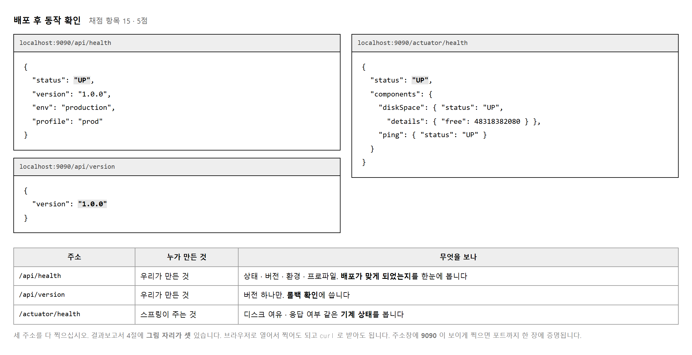
이 프로그램에는 웹 페이지가 없습니다. 주소로 물어보면 JSON 으로 답할 뿐입니다. 그래도 배포가 제대로 되었는지는 이 응답만으로 다 알 수 있습니다.
| 응답의 값 | 무엇을 증명하나 | 틀리면 |
|---|---|---|
| status: UP | 프로그램이 살아 있다 | 아직 안 떴습니다 |
| profile: prod | 운영 설정으로 떴다 | default 면 프로파일을 안 걸었습니다 |
| env: production | prod 파일을 읽었다 | dev 면 파일이 비었거나 이름이 틀립니다 |
| 포트 9090 | 운영 포트로 떴다 | 8080 이면 기본 설정으로 떴습니다 |
| version: 1.0.0 | 어느 버전이 올라갔나 | 롤백 확인의 기준값입니다 |
주소창이 함께 보이게 찍으면 포트까지 한 장에 증명됩니다.
curl 로 받아도 되지만 브라우저 쪽이 주소가 같이 나와 유리합니다.
목적 — 이 프로그램에는 웹 페이지가 없습니다. 주소로 물어보면 JSON 으로 답할 뿐입니다. 그래도 배포가 제대로 되었는지는 이 응답만으로 다 알 수 있습니다.
curl http://localhost:9090/health
{"status":"UP","profile":"prod","env":"production","port":"9090"}
curl http://localhost:9090/version
{"version":"1.0.0"}
| 응답의 값 | 무엇을 증명하나 | 틀리면 |
|---|---|---|
status: UP | 프로그램이 살아 있다 | 아직 안 떴습니다 |
profile: prod | 운영 설정으로 떴다 | default 면 프로파일을 안 걸었습니다 |
env: production | prod 파일을 읽었다 | dev 면 파일이 비었거나 이름이 틀립니다 |
port: 9090 | 운영 포트로 떴다 | 8080 이면 기본 설정으로 떴습니다 |
version: 1.0.0 | 어느 판이 올라갔나 | 롤백 확인의 기준값입니다 (실습 15) |
프로파일을 안 걸고 띄우면 이렇게 됩니다.
curl http://localhost:8080/health
{"status":"UP","profile":"default","env":"dev","port":"8080"}
curl http://localhost:9090/health
(응답 없음 — 그 포트에 아무것도 없습니다)
기동 로그에도 한 줄이 찍힙니다.
INFO --- [main] kr.dep.DeployApp :
No active profile set, falling back to 1 default profile: "default"
status 가 UP 이라 떴다고 착각합니다.
그런데 포트도 설정도 전부 기본값입니다 —
운영 데이터베이스가 아니라 개발용을 보고 있습니다.
status 만 보지 말고 네 값을 다 보십시오.| 무엇으로 | 장단 |
|---|---|
| 브라우저 | 주소가 같이 나와 포트까지 한 장에 증명됩니다 — 이쪽을 권합니다 |
curl |
값은 같지만 주소가 안 보입니다. 명령 줄까지 함께 찍으십시오 |
| 언제 | 보여야 할 것 | |
|---|---|---|
| 1 | 운영에 올린 직후 | /health — prod · production · 9090 |
| 2 | 같은 때 | /version — 올린 판 |
| 3 | 롤백한 뒤 | /version — 판이 되돌아간 것 (실습 15) |
| 나오는 것 | 볼 곳 |
|---|---|
| 응답이 아예 없음 | 포트가 다릅니다. 기동 로그의
Tomcat started on port … 를 보십시오 |
profile 이 default |
-Dspring.profiles.active=prod 를 안 줬습니다 |
env 가 dev 인데 포트는 9090 |
포트만 맞추고 prod 파일을 안 읽었습니다.
파일 이름이 application-prod.properties 인지 보십시오 |
401 이 남 |
의존성에 security 가 들어 있습니다.
이 과제 범위가 아니면 빼십시오 |
version 이 0.0.0 |
판을 설정에서 안 읽고 있습니다 (실습 11) |
제출물 — 값 다섯의 뜻을 적은 표 + 틀린 쪽 화면(default) + 찍을 것 세 컷 계획
스스로 확인 —
① 값 다섯이 무엇을 증명하는지 말할 수 있습니까
② status: UP 만으로 안심하면 안 되는 까닭을 압니까
③ 찍을 것이 세 컷인 것을 적어 두었습니까
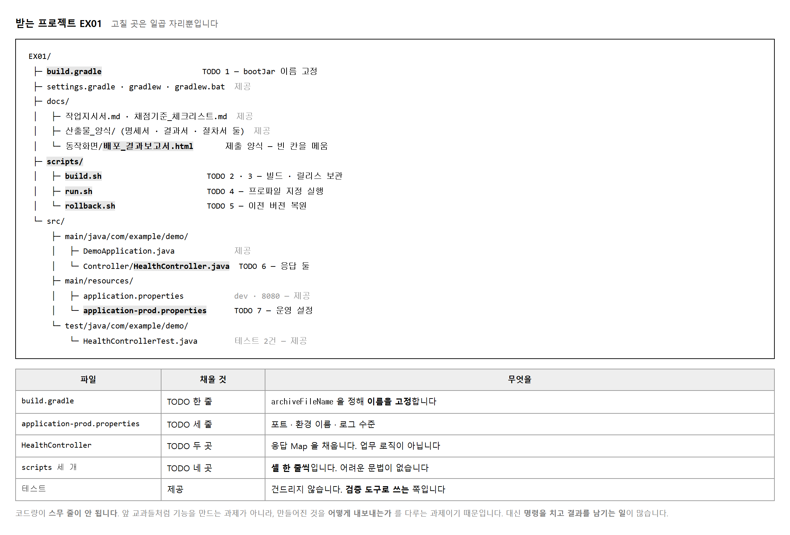
| 번호 | 파일 | 채울 것 |
|---|---|---|
| 1 | build.gradle | archiveFileName 한 줄 |
| 2 | application-prod.properties | 포트 · 환경 이름 · 로그 수준 세 줄 |
| 3 | HealthController.health() | 응답 Map 네 칸 |
| 4 | HealthController.version() | 응답 Map 한 칸 |
| 5 | scripts/build.sh | 빌드 명령 한 줄 |
| 6 | scripts/build.sh | 릴리스 사본 보관 네 줄 |
| 7 | scripts/run.sh · rollback.sh | 실행 한 줄 · 복사 한 줄 |
@GetMapping("/health")
public Map<String, Object> health() {
Map<String, Object> body = new LinkedHashMap<>();
body.put("status", "UP");
body.put("version", version); // @Value 로 읽어 둔 값
body.put("env", env);
body.put("profile", profile);
return body;
}
여기가 null 인 채로 두면 테스트가 실패해 소스 검증에서 막힙니다.
LinkedHashMap 을 쓰면 넣은 차례대로 나옵니다.
HashMap 을 써도 값은 같지만 순서가 뒤섞여 캡처가 읽기 나빠집니다.
@Value("${spring.profiles.active:default}") 의 콜론 뒤 default 는
「값이 없으면 이것을 쓴다」 는 뜻입니다.
그래서 프로파일을 안 걸고 띄우면 응답에 "profile":"default" 가 찍힙니다.
캡처에 이 글자가 보이면 운영 배포가 아닙니다.
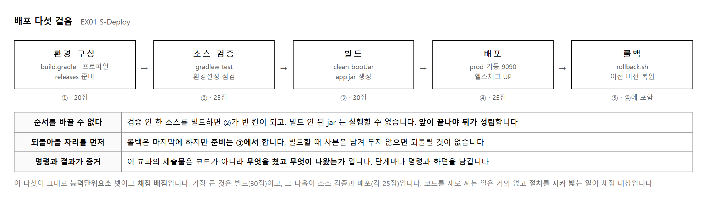
| 걸음 | 치는 명령 | 남길 것 |
|---|---|---|
| ① 환경 구성 | 파일을 고치는 일 | 설정 표 · 소프트웨어 목록 |
| ② 소스 검증 | git clone · gradlew test |
체크아웃 화면 · 테스트 결과 |
| ③ 빌드 | ./scripts/build.sh |
빌드 로그 · 산출물 목록 |
| ④ 배포 | ./scripts/run.sh prod |
기동 로그 · 응답 세 컷 |
| ⑤ 롤백 | ./scripts/rollback.sh 1.0.0 |
복원 화면 · 버전 확인 |
개발은 내 자리에서 잘 도는 것이 목표입니다. 배포는 남의 자리에서도 같게 도는 것이 목표입니다. 그래서 배포는 절차를 굳혀 둡니다. 손으로 치면 사람마다 달라지기 때문입니다.
이 과제에서 스크립트 셋을 쓰는 까닭도 거기에 있습니다. 빌드도 실행도 롤백도 명령 한 줄로 끝나게 해 두면 다음 사람이 와서 그대로 칠 수 있습니다.
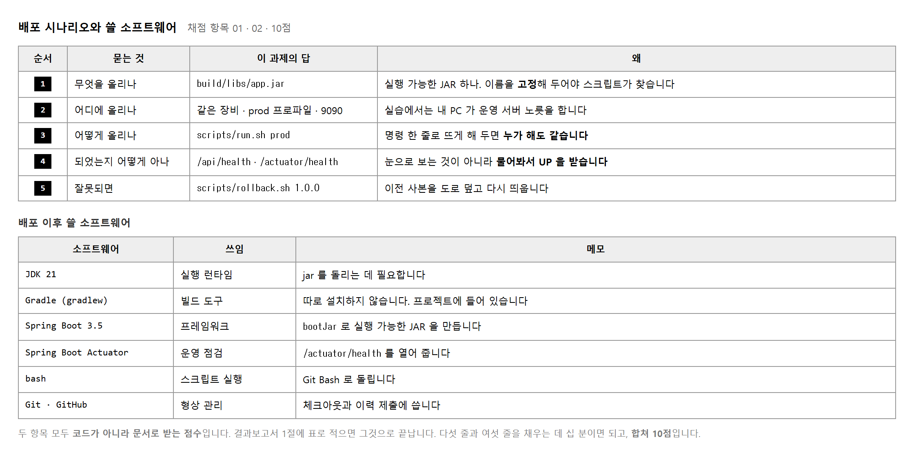
「배포 시나리오」 라는 말이 커 보이지만 묻는 것은 다섯입니다. 무엇을 · 어디에 · 어떻게 올리고 · 어떻게 확인하고 · 잘못되면 어떻게 되돌리나. 각각 한 줄이면 됩니다.
답을 적을 때는 명령 그대로 쓰십시오.
「스크립트로 실행한다」 가 아니라 ./scripts/run.sh prod 로 적습니다.
읽는 사람이 따라 칠 수 있어야 시나리오 노릇을 합니다.
채점 항목 02 의 말입니다. 올린 뒤에도 계속 필요한 것을 적으라는 뜻입니다.
| 쓰는 때 | 무엇이 필요한가 |
|---|---|
| 올릴 때만 | Gradle · Git — 빌드하고 받아 올 때 씁니다 |
| 올린 뒤에도 | JDK 21 — jar 를 계속 돌립니다 · Actuator — 살아 있는지 계속 물어봅니다 |
둘을 갈라 적으면 표가 깊어집니다. 운영 장비에 무엇이 남아 있어야 하는지가 한눈에 보이기 때문입니다.
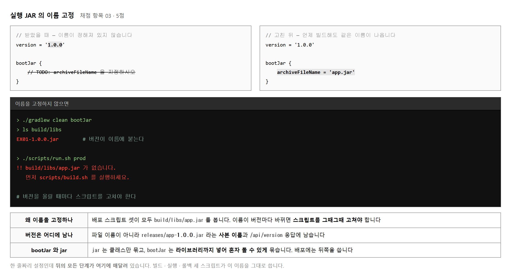
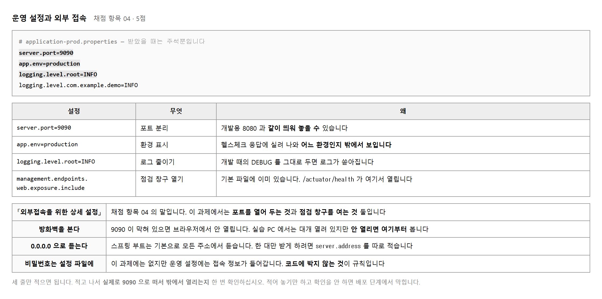
# build.sh 안에서 없으면 만들어 줍니다
mkdir -p releases
cp "$JAR" "releases/app-${VERSION}.jar"
-p 는 「이미 있으면 그냥 넘어가라」 는 뜻입니다.
없을 때만 만들고 있을 때는 아무 일도 하지 않습니다.
그래서 몇 번을 돌려도 안전합니다.
> ./gradlew clean bootJar > ls -1 build/libs app.jar # 이름이 고정되었는지 > java -jar build/libs/app.jar --spring.profiles.active=prod The following 1 profile is active: "prod" Tomcat started on port 9090 # 운영 설정이 걸렸는지
두 가지를 이 자리에서 확인해 두면 뒤가 막히지 않습니다. 이름이 틀리면 스크립트가 못 찾고, 프로파일이 안 걸리면 배포 단계가 통째로 어긋납니다.
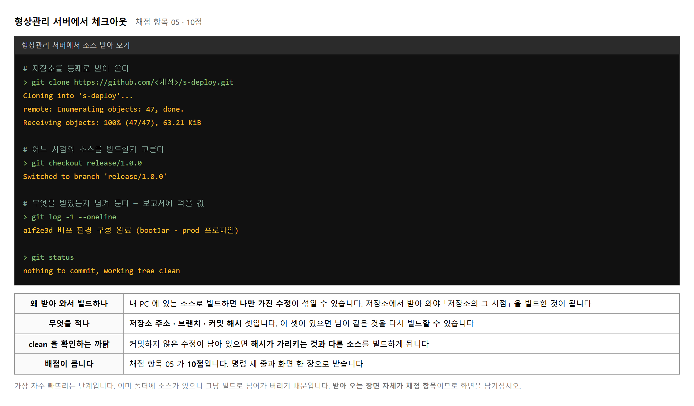
배포는 「저장소의 어느 시점」 을 내보내는 일입니다. 내 PC 폴더에 있는 소스로 빌드하면 그것이 저장소의 어느 시점인지 아무도 모릅니다. 커밋하지 않은 수정이 섞였을 수도 있습니다.
그래서 받아 오는 일 자체가 채점 항목이 됩니다. 실습에서는 이미 폴더에 프로젝트가 있으니 건너뛰기가 쉽습니다. 그러면 10점이 통째로 빕니다.
| 값 | 얻는 명령 | 보기 |
|---|---|---|
| 저장소 주소 | git remote -v |
https://github.com/…/s-deploy.git |
| 브랜치 | git branch --show-current |
release/1.0.0 |
| 커밋 해시 | git log -1 --oneline |
a1f2e3d |
이 셋이 있으면 남이 같은 것을 다시 빌드할 수 있습니다. 그것이 형상관리가 하는 일이고, 그래서 배점이 10점입니다.
git status 에 nothing to commit, working tree clean 이 찍히는지 보십시오.
고쳐 놓고 커밋하지 않은 것이 있으면
커밋 해시가 가리키는 소스와 실제로 빌드한 소스가 다릅니다.
이 한 줄까지 캡처에 넣으면 대조가 끝납니다.
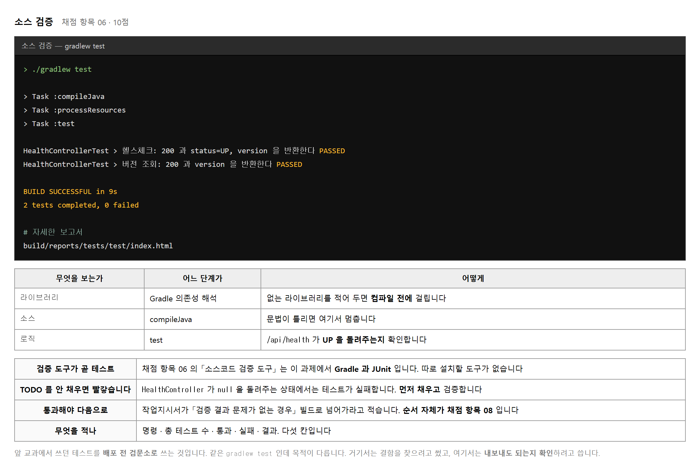
수행준거 2.2 가 「라이브러리 · 소스 · 로직 등의 오류」 를 듭니다.
셋을 따로 볼 도구를 찾을 것 없이 gradlew test 한 명령이 차례로 거릅니다.
> ./gradlew test > Task :compileJava // 라이브러리를 못 받으면 여기 전에 멈춤 > Task :processResources // 소스 문법이 틀리면 여기서 멈춤 > Task :test // 동작이 다르면 여기서 멈춤 BUILD SUCCESSFUL 2 tests completed, 0 failed
| 칸 | 값 |
|---|---|
| 실행 명령 | ./gradlew test |
| 총 테스트 수 | 2 |
| 통과 / 실패 | 2 / 0 |
| 결과 | BUILD SUCCESSFUL |
| 판정 | 빌드로 이관 가능 |
null 을 돌려주므로 status 도 version 도 없기 때문입니다.
이 교과에서는 실패한 채로 다음으로 넘어갈 수 없습니다.
통과를 확인해야 빌드 이관이 성립합니다.
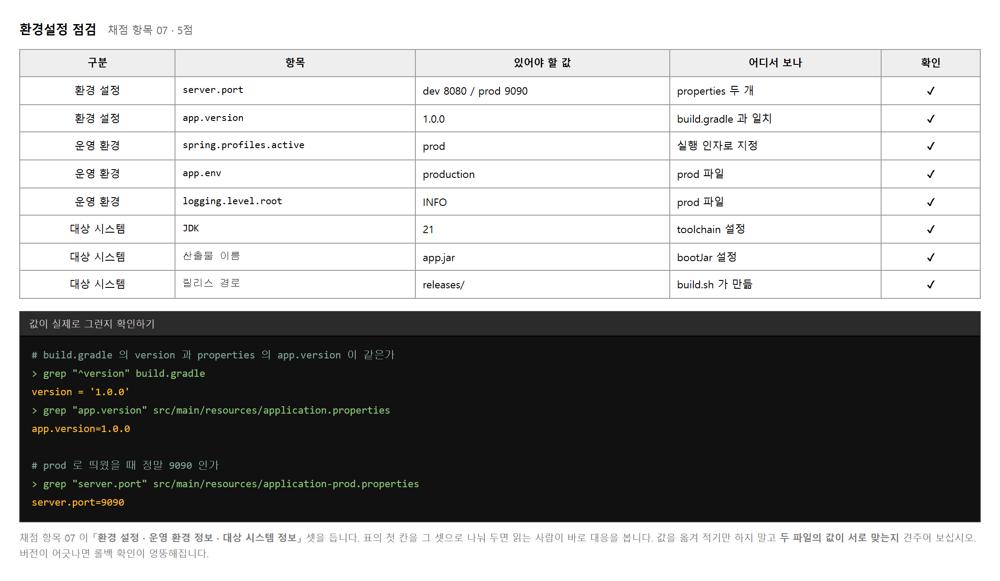
값을 표에 옮겨 적는 것만으로는 점검이 되지 않습니다. 두 곳에 적힌 같은 값이 서로 맞는지 보는 것이 점검입니다.
| 견줄 짝 | 어긋나면 |
|---|---|
| build.gradle 의 version ↔ app.version |
롤백했는데 버전이 안 바뀐 것처럼 보입니다 |
| prod 의 server.port ↔ 시나리오의 포트 |
보고서와 실제 화면의 포트가 다릅니다 |
| bootJar 의 이름 ↔ 스크립트가 찾는 이름 |
실행 단계에서 파일을 못 찾습니다 |
| JDK 21 ↔ 실행 장비의 자바 |
jar 가 안 뜹니다 |
# 실행 장비의 자바 확인
> java -version
openjdk version "21.0.2" 2024-01-16
# build.gradle 의 toolchain 확인
> grep -A2 toolchain build.gradle
toolchain {
languageVersion = JavaLanguageVersion.of(21)
}
준거 2.3 이 「환경 설정 · 운영 환경 정보 · 대상 시스템 정보」 셋을 나눠 듭니다. 표의 첫 칸을 그 셋으로 두면 읽는 사람이 대응을 바로 봅니다. 5점짜리 항목인데 표 한 장으로 끝납니다.
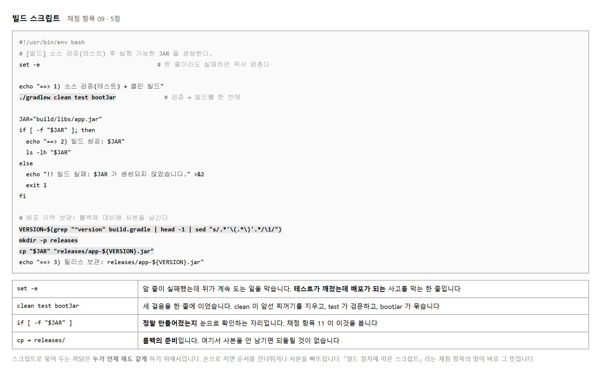
큰 현장에서는 검증을 통과한 소스를 빌드 서버로 넘깁니다. 이 과제에는 서버가 따로 없으므로 검증과 빌드를 한 흐름에 잇는 것이 이관입니다.
./gradlew clean test bootJar # ↑ ↑ ↑ # 찌꺼기 검문소 묶기
가운데에 test 가 있으므로 검증에 실패하면 묶이지 않습니다.
사람이 순서를 지킬 필요 없이 도구가 지켜 줍니다.
채점 항목 08 의 배점이 10점인 까닭도 여기에 있습니다.
set -e # 한 줄이라도 실패하면 즉시 멈춘다
이것이 없으면 gradlew 가 실패해도 다음 줄이 계속 돕니다.
그러면 낡은 jar 를 릴리스로 보관하는 사고가 납니다.
셸 스크립트를 쓸 때는 거의 언제나 맨 위에 둡니다.
VERSION=$(grep "^version" build.gradle | head -1 | sed "s/.*'\(.*\)'.*/\1/")
줄이 길어 보이지만 하는 일은 하나입니다 —
build.gradle 에서 version = '1.0.0' 줄을 찾아
따옴표 안의 1.0.0 만 꺼냅니다.
이렇게 해 두면 버전을 올렸을 때 스크립트를 고치지 않아도 사본 이름이 따라옵니다.
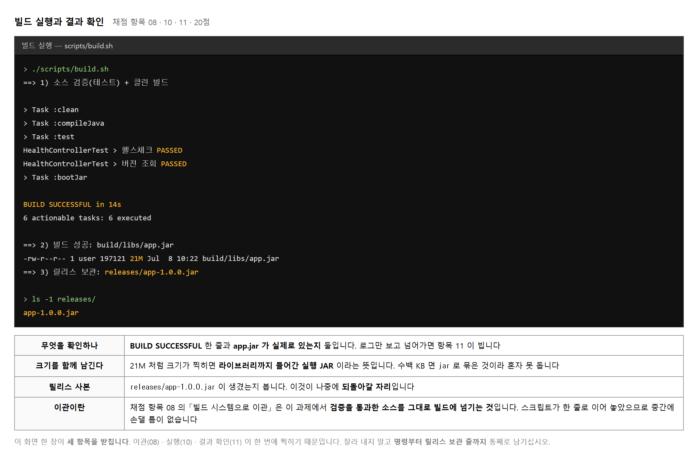
로그에 BUILD SUCCESSFUL 이 찍혔다고 끝이 아닙니다. 결과물이 실제로 있는지 눈으로 보는 것까지가 확인입니다.
> ls -lh build/libs/app.jar -rw-r--r-- 1 user 197121 21M Jul 8 10:22 build/libs/app.jar
| 보는 것 | 판단 |
|---|---|
| 파일이 있는가 | 없으면 빌드가 도중에 멈췄습니다 |
| 크기가 20MB 안팎인가 | 수백 KB 면 라이브러리가 안 들어간 jar 입니다 |
| 시각이 방금인가 | 옛날 것이면 clean 이 안 돌았습니다 |
if [ -f "$JAR" ]; then echo "==> 2) 빌드 성공: $JAR" ls -lh "$JAR" else echo "!! 빌드 실패: $JAR 가 생성되지 않았습니다." >&2 exit 1 fi
exit 1 은 「실패로 끝냈다」 는 신호입니다.
나중에 이 스크립트를 다른 도구가 부를 때 성공인지 실패인지 알아볼 수 있습니다.
롤백은 마지막 단계이지만 준비는 이 자리에서 끝납니다. 빌드할 때마다 사본을 남겨 두지 않으면 나중에 갈 곳이 없습니다.
mkdir -p releases
cp "$JAR" "releases/app-${VERSION}.jar"
사본이 하나뿐이면 되돌릴 자리가 없어 롤백을 흉내만 내게 됩니다. 실습에서는 버전을 한 번 올려 두 개를 만들어 두십시오.
| 차례 | 하는 일 | 결과 |
|---|---|---|
| 1 | ./scripts/build.sh |
releases/app-1.0.0.jar |
| 2 | build.gradle 의 version 을 1.1.0 으로 | 한 글자만 고칩니다 |
| 3 | ./scripts/build.sh 다시 |
releases/app-1.1.0.jar |
| 4 | ls -1 releases/ |
두 개가 보입니다 |
> ls -1 releases/
app-1.0.0.jar
app-1.1.0.jar
> ./scripts/run.sh prod
> curl -s http://localhost:9090/api/version
{"version":"1.1.0"} # 지금 올라간 것은 새 버전
app.version 도 같이 올려야 합니다.
build.gradle 의 version 은 파일 이름에 쓰이고,
application.properties 의 app.version 은 응답에 쓰입니다.
하나만 올리면 파일 이름은 1.1.0 인데 응답은 1.0.0 이라
롤백해도 숫자가 안 바뀌어 확인이 되지 않습니다.
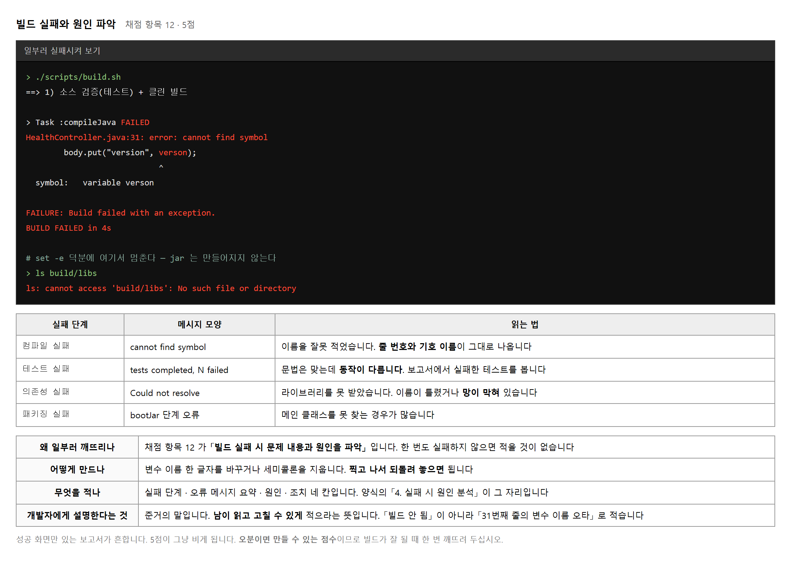
| 차례 | 하는 일 | 확인 |
|---|---|---|
| 1 | 변수 이름 한 글자를 바꿉니다 | version → verson |
| 2 | ./scripts/build.sh |
BUILD FAILED 캡처 |
| 3 | 메시지를 보고서에 옮깁니다 | 단계 · 메시지 · 원인 · 조치 |
| 4 | 글자를 되돌립니다 | git checkout -- <파일> 도 됩니다 |
| 5 | 다시 빌드해 성공을 확인합니다 | BUILD SUCCESSFUL |
준거 3.5 의 말입니다. 남이 읽고 고칠 수 있게 적으라는 뜻입니다.
| 이렇게 적으면 부족 | 이렇게 적으면 설명 |
|---|---|
| 빌드가 안 됨 | 컴파일 단계에서 HealthController.java:31 의
verson 이 선언되지 않아 실패.
변수 이름 오타이므로 version 으로 고침 |
| 테스트 실패 | health_UP 이 $.status 를 찾지 못해 실패.
컨트롤러가 null 을 돌려주는 것이 원인 |
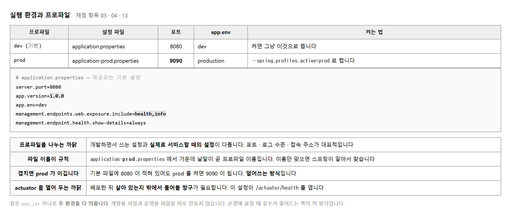
| 확인할 것 | 이 과제의 값 | 확인 방법 |
|---|---|---|
| 올릴 파일 | build/libs/app.jar |
ls -lh build/libs |
| 대상 프로파일 | prod | 실행 인자로 지정 |
| 대상 포트 | 9090 | prod 설정 파일 |
| 자바 버전 | 21 | java -version |
| 포트가 비었는가 | 9090 을 쓰는 것이 없어야 합니다 | netstat -ano | findstr 9090 |
Web server failed to start. Port 9090 was already in use.
앞서 띄운 프로그램이 안 꺼져 있으면 이 메시지가 납니다.
앞 창에서 Ctrl+C 로 끄고 다시 띄우면 됩니다.
실습 중에 가장 자주 만나는 오류이므로 미리 알아 두면 당황하지 않습니다.
같은 설정이 여러 곳에 있으면 나중 것이 이깁니다.
| 차례 | 어디 | 이 과제에서 |
|---|---|---|
| 1 | application.properties | 8080 |
| 2 | application-prod.properties | 9090 — 이깁니다 |
| 3 | 실행할 때 준 인자 | 더 주면 이것이 이깁니다 |
그래서 급할 때는 --server.port=9091 처럼
명령줄에서 바로 바꿀 수도 있습니다.
다만 보고서에는 어디에서 온 값인지 적어 두어야 읽는 사람이 헷갈리지 않습니다.
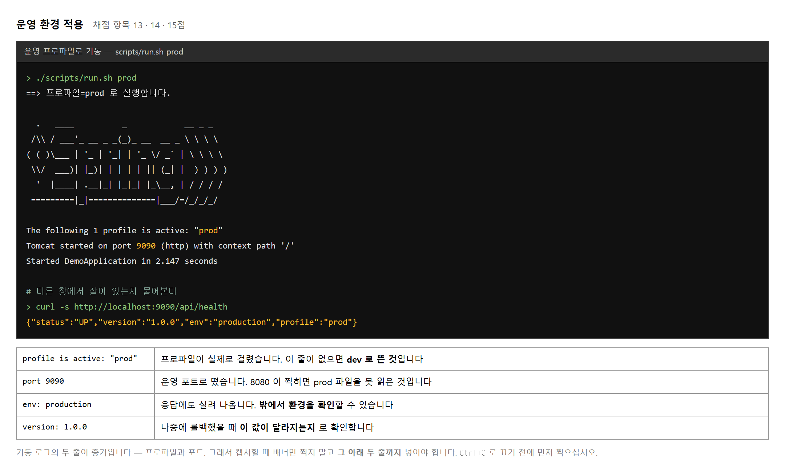
# ① 스크립트로 — 권장 ./scripts/run.sh prod # ② java 명령으로 직접 java -jar build/libs/app.jar --spring.profiles.active=prod # ③ 환경 변수로 SPRING_PROFILES_ACTIVE=prod java -jar build/libs/app.jar
보고서에는 실제로 친 것을 적으십시오. 스크립트로 했으면 스크립트를, 직접 쳤으면 그 명령을 적습니다. 셋 다 적어 두면 어느 것을 했는지 알 수 없습니다.
앱을 띄운 창은 로그가 계속 흐르므로 그 창에서는 명령을 칠 수 없습니다. 창을 하나 더 열어 거기서 확인 명령을 칩니다.
# 두 번째 창
> curl -s http://localhost:9090/api/health
{"status":"UP","version":"1.0.0","env":"production","profile":"prod"}
> curl -s http://localhost:9090/actuator/health
{"status":"UP","components":{...}}
브라우저로 열어도 됩니다. 주소창이 같이 찍혀 포트까지 증명되므로 오히려 낫습니다. 결과보고서 4절에 그림 자리가 셋이므로 세 주소를 다 찍으십시오.
"profile":"default" 나 "env":"dev" 가 보이면
운영 배포가 아닙니다. 프로파일이 안 걸렸습니다.
기동 로그의 The following 1 profile is active: "prod" 한 줄을
먼저 확인하고 나서 응답을 찍는 편이 안전합니다.
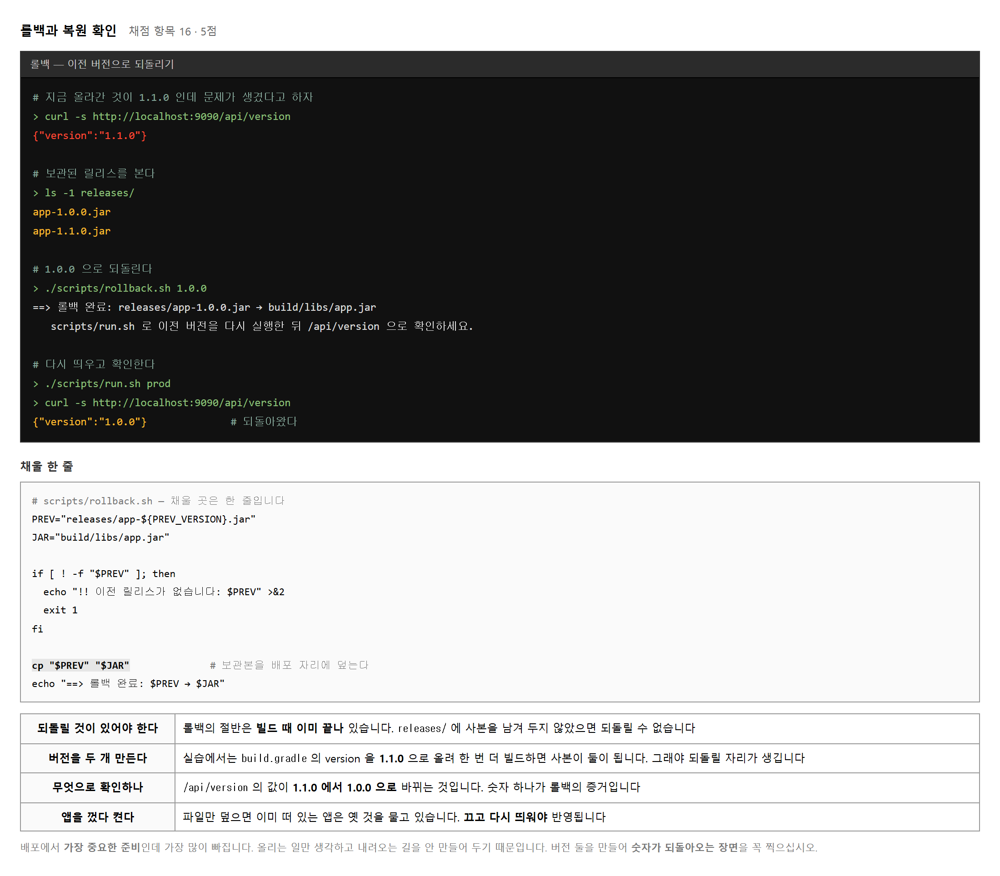
| 차례 | 명령 | 보는 것 |
|---|---|---|
| 1 | curl .../api/version |
지금 올라간 것이 무엇인지 |
| 2 | ls -1 releases/ |
되돌아갈 사본이 있는지 |
| 3 | ./scripts/rollback.sh 1.0.0 |
사본이 배포 자리에 덮였는지 |
| 4 | ./scripts/run.sh prod 후 다시 확인 |
버전이 되돌아왔는지 |
파일만 덮으면 이미 떠 있는 앱은 옛 것을 물고 있습니다.
자바는 프로그램을 켤 때 jar 를 읽어 들이므로 그 뒤에 파일이 바뀌어도 모릅니다.
Ctrl+C 로 끄고 다시 띄워야 바뀝니다.
실습에서는 실제로 문제가 난 것이 아니므로 가정을 적습니다.
| 칸 | 적는 보기 |
|---|---|
| 롤백 사유 | 1.1.0 배포 후 /api/health 응답 지연이 확인되어 이전 버전으로 복원 (가정) |
| 현재 버전 | 1.1.0 |
| 복원 대상 | 1.0.0 |
| 복원 확인 | /api/version 이 {"version":"1.0.0"} 으로 돌아옴 |
「가정」 이라고 적어 두면 꾸며 낸 것이 아니라 연습이라는 점이 분명해집니다. 사유 없이 롤백만 적으면 왜 되돌렸는지 읽는 사람이 알 수 없습니다.
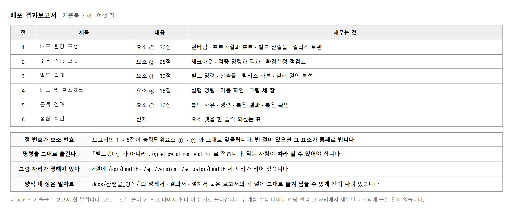
| 번호 | 무엇 | 어느 항목 |
|---|---|---|
| 1 | 체크아웃 화면 | 05 |
| 2 | gradlew test 통과 콘솔 | 06 |
| 3 | 빌드 로그와 릴리스 보관 | 08 · 10 · 11 |
| 4 | 빌드 실패 콘솔 | 12 |
| 5 | prod 기동 로그 | 14 |
| 6 ~ 8 | 엔드포인트 응답 세 컷 | 15 |
| 9 | 롤백 후 버전 확인 | 16 |
./scripts/build.sh 로 적습니다.docs/산출물_양식/ 에 배포환경 명세서 · 빌드 결과서 · 배포 절차서 · 롤백 절차서
네 장이 들어 있습니다. 보고서의 각 절과 칸이 그대로 맞물립니다.
양식을 먼저 채우고 보고서로 옮기면 빠뜨리는 칸이 없습니다.
아래 여덟 가지가 되풀이되는 감점입니다. 이 교과의 감점은 틀려서가 아니라 빠뜨려서 납니다. 할 줄 몰라서 못 한 것이 아니라, 하고도 남기지 않았거나 아예 건너뛴 탓입니다.
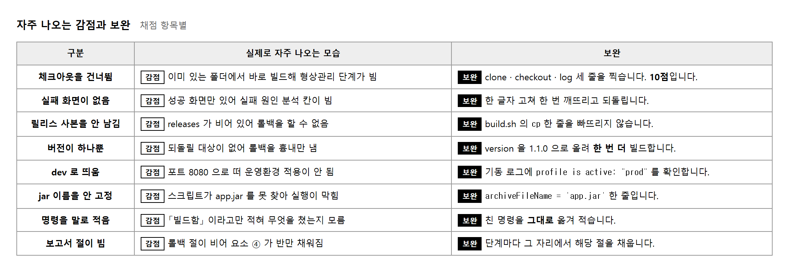